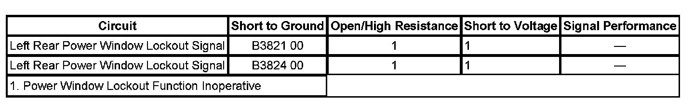

Power Window Lockout Function Inoperative
POWER WINDOW LOCKOUT FUNCTION INOPERATIVE
DIAGNOSTIC FAULT INFORMATION

Perform the Diagnostic System Check - Vehicle prior to using this diagnostic procedure. Initial Inspection and Diagnostic Overview
CIRCUIT/SYSTEM DESCRIPTION
Accessory/RAP voltage is supplied to the left rear power window switch through the window lockout signal circuit. If the window lockout function is disabled, the body control module (BCM) supplies voltage to the rear window switches allowing for normal window operation from the rear switches. If the window lockout function is enabled, the BCM will not supply voltage to the rear window switches and the rear windows will only operate from the driver power window switch through the BCM up and down signal circuits.
CIRCUIT/SYSTEM TESTING
Power Window Lockout Function Inoperative
1. Install a scan tool and display the Driver Door Switch Inputs data list.
2. Ignition on, verify that the window lockout switch parameter displays On only while the lockout switch is pressed.
- If the switch parameter is incorrect, replace the DDS.
3. Display the Body Control Module Doors data list.
4. Verify that the LR and RR Window Enable Command parameters change form On to Off when the lockout function is activated.
- If the enable command parameters are incorrect, replace the BCM.
5. Disconnect the affected rear door power window switch connector, and activate the rear window lockout function.
6. Verify that a test lamp does not illuminate when connected from the lockout signal circuit terminal to ground.
- If the test lamp illuminates, test the lockout signal circuit for a short to voltage. If the circuit tests normal replace the BCM.
7. If the circuits test normal replace the affected rear door power window switch.
REPAIR INSTRUCTIONS
Perform the Diagnostic Repair Verification after completing the diagnostic procedure.
- Rear Side Door Window Switch Replacement
- Control Module References for DDS or BCM replacement, programming, and setup. Verification Tests Programming and Relearning